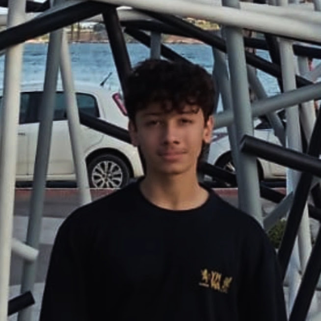
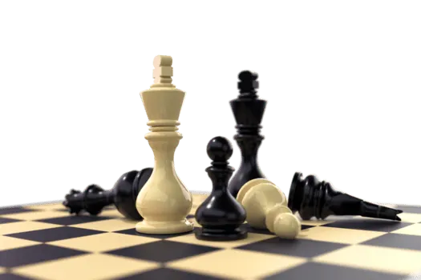
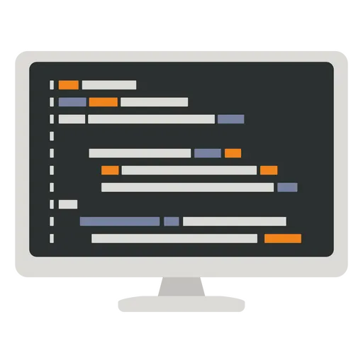
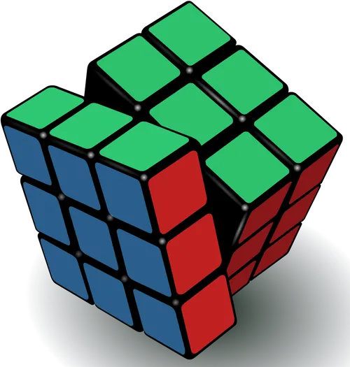
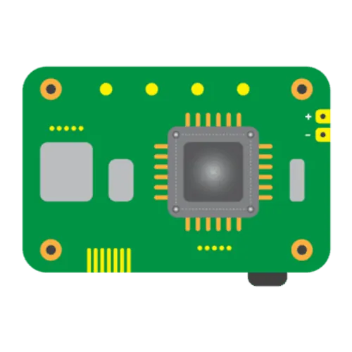

Sobre mim

Meu nome é Enzo Versiani, tenho 17 anos e sou apaixonado por tecnologia e tudo que envolve o mundo nerd. Atualmente sou estudante e programador amador, participando ativamente de projetos pessoais e de Iniciação Científica voltados à automação, eletrônica e desenvolvimento de software.
Formação & Trajetória Acadêmica
- Instituto Federal do Espírito Santo – Campus Serra
- Curso Técnico em Mecatrônica Integrado ao Ensino Médio
- Participação em projetos de Iniciação Científica (Robótica e Programação)
Hobbies
-

Xadrez
Pratico xadrez rotineiramente e participo de pequenos campeonatos, colecionando algumas premiações nos mesmos.
-
Programação
Desenvolvo projetos pessoais por hobby, explorando linguagens, microcontroladores e novas tecnologias.

-

Cubo Mágico
CuboManíaco de plantão, resolvo alguns tipos de cubos de rubik diferentes e participo de competições raramente.
-
Robótica
Desde o ensino fundamental inserido nessa área, desperta meu interesse para além dos projetos de pesquisa e extensão, se tornando uma espécie de lazer com pequenos projetos pessoais.

Contato
Projetos
Olimpíadas Científicas
Aprofundamento em Matemática
- PIC – Programa de Iniciação Científica da OBMEP [2024]
- POTI – Polo Olímpico de Treinamento Intensivo [2024–2025]